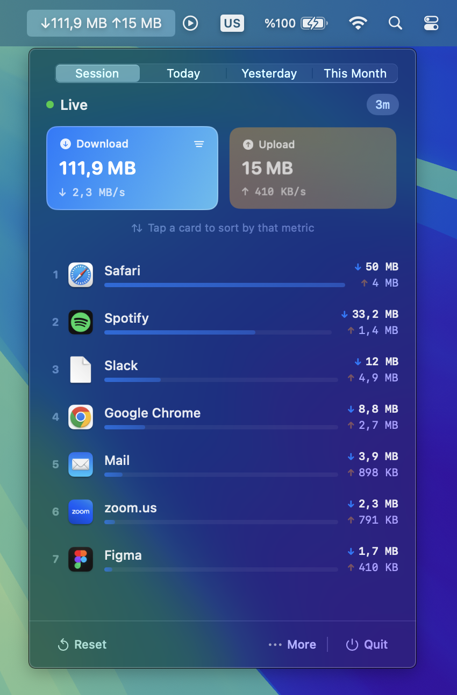
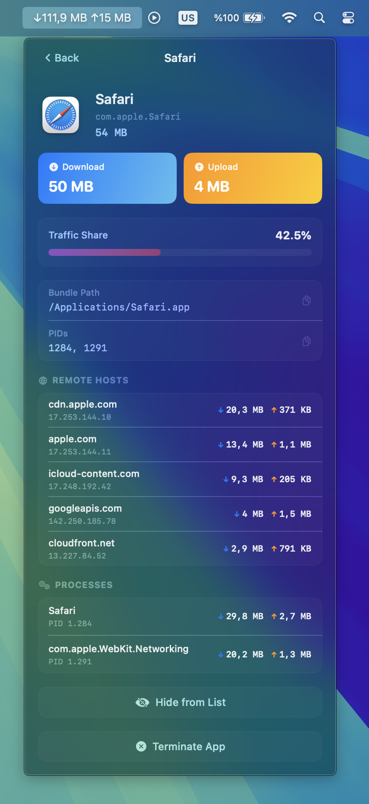
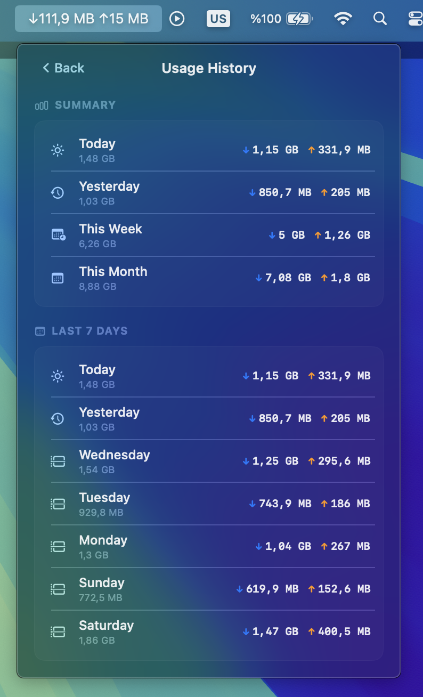

DataDrain lives in your menu bar and shows you which apps are using your network, how much, and where they're connecting to.

A quick look at what you get.
See real-time download and upload speeds right in your menu bar. Choose to show both, one, or just an icon.
Instantly see which apps consume your bandwidth. Sorted by usage so the heaviest hitters are always on top.
Drill into each app to see exactly which remote servers it connects to, with download and upload bytes per host.
See individual processes within each app and their network footprint. Know exactly what's sending data.
Track your network usage over time — daily, weekly, and monthly summaries so you can spot trends.
Force quit misbehaving apps directly from DataDrain. No need to open Activity Monitor.
Hide apps you don't want cluttering your view. They still get tracked, just out of sight.
Set it once and forget it. DataDrain starts automatically every time you log in to your Mac.
Built with SwiftUI. No Electron, no web views. Tiny memory footprint and buttery smooth performance.
Pick any app and see the remote servers, data per connection, and the processes responsible.

DataDrain keeps a rolling log of your daily, weekly, and monthly usage so you can look back anytime.

Get DataDrain for a one-time price. No subscription, no hidden fees.
Download and drag it to your Applications folder. Done in seconds.
Click the menu bar icon and see what's using your network. No account, no setup.
DataDrain is a lightweight macOS menu bar app that monitors your network activity in real time. It shows you which apps are using your internet, how much bandwidth they consume, and which remote servers they connect to.
Yes. DataDrain is a universal binary that runs natively on both Apple Silicon (M1, M2, M3, M4) and Intel Macs with full performance.
DataDrain requires macOS 14.0 (Sonoma) or later.
No. DataDrain uses less than 1% CPU and minimal memory. It polls network statistics every 2 seconds using efficient native system APIs — no Electron, no web views.
No. DataDrain runs 100% locally on your Mac. It has no analytics, no telemetry, no accounts, and makes zero outbound network requests. Your data never leaves your device.
DataDrain uses system-level tools to read per-app network statistics. These require access that isn't available inside the macOS App Sandbox, which is why it's distributed directly.
Yes. DataDrain keeps a rolling log of your daily, weekly, and monthly download and upload totals so you can spot trends and monitor usage patterns.
See exactly what's using your network. One-time purchase, yours forever.